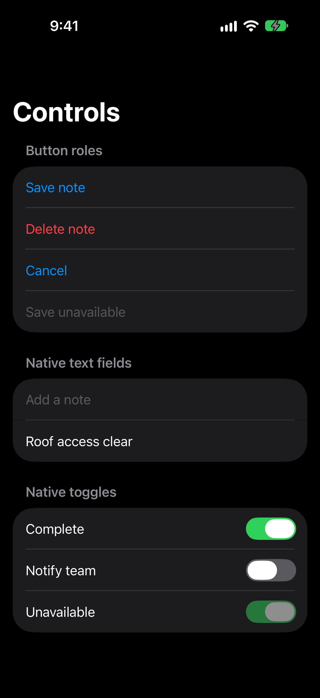
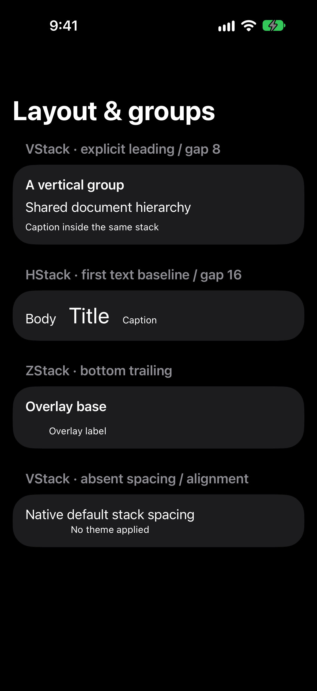
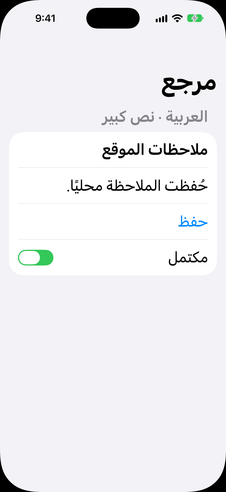

Typography


Native iPhone 18 Pro simulator · iOS 27.0 (24A434) · 402×874 points · scale 3 · original PNGs 1206×2622 pixels. Each pair renders byte-identical shared UIDocument content through the frozen, unchanged MixerApple adapter at revision 958998d92f1c2ba205de09a83d957d738b619572.
Simulator baseline only. Candidate theme is absent. No numeric node measurements or physical parity claim. Accountable token/design review and physical iOS/Android review remain pending. Images scale only for gallery viewing; links open the unchanged native PNGs.
Scope and reproduction · Agent observations · Exact evidence receipt




